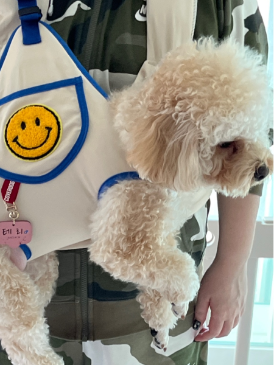
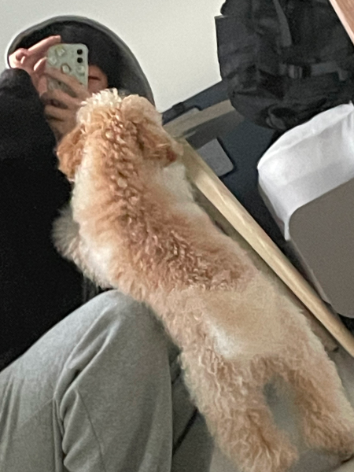

| 번호 | 일자 | 시간 | 항목 | 기록 내용 |
|---|---|---|---|---|
| 01. | 2024.11.28 | 오전 11:20 | 사료급여 | 로얄캐닌 25g 급여 |
| 02. | 2024.11.28 | 오전 11:50 | 산책 | 공원에서 30분 산책 |
| 03. | 2024.11.28 | 오후 13:20 | 배변 | 실외 배변 (양호) |
| 04. | 2024.11.28 | 오전 17:00 | 사료급여 | 터그 놀이 15분 |
| 05. | 2024.11.28 | 오후 19:00 | 간식 | 수제 간식 (치킨 큐브 5개) |
| 06. | 2024.11.28 | 오후 21:20 | 산책 | 기본 훈련 (앉아, 기다려) |
| 07. | 2024.11.29 | 오전 08:21 | 사료급여 | 사료 20g + 연어 오일 |
항목을 선택하면 여기에 표시됩니다.
반려견 등록 사진

